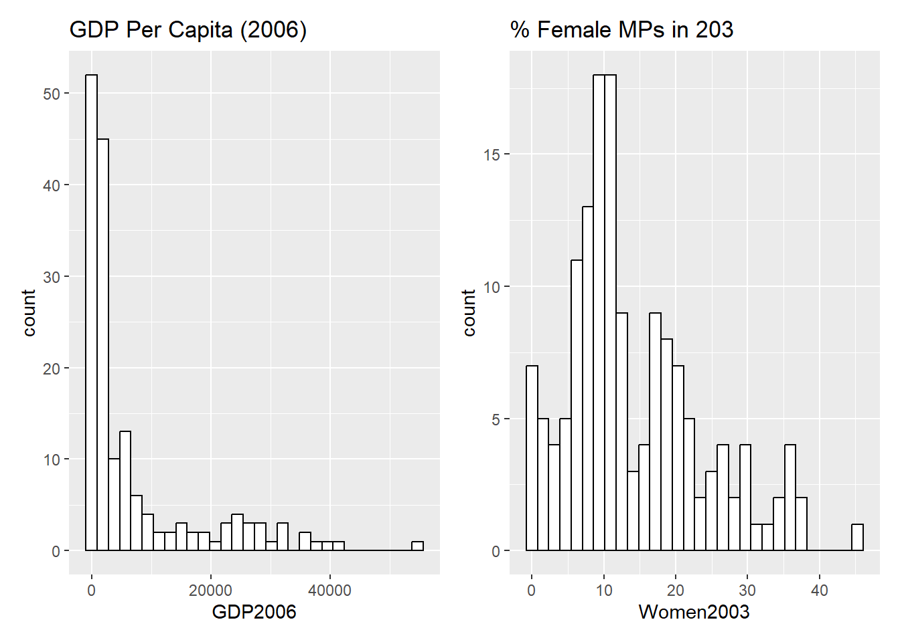
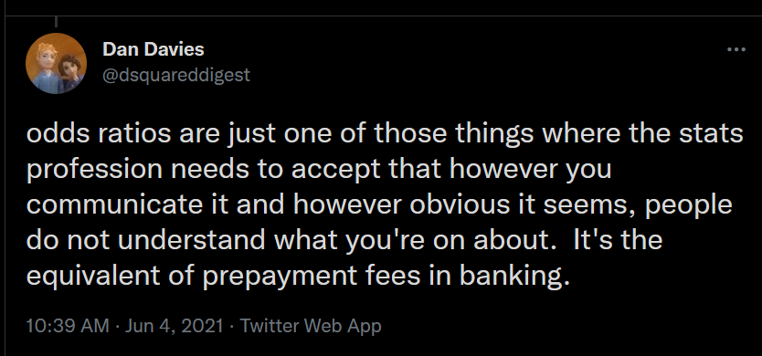
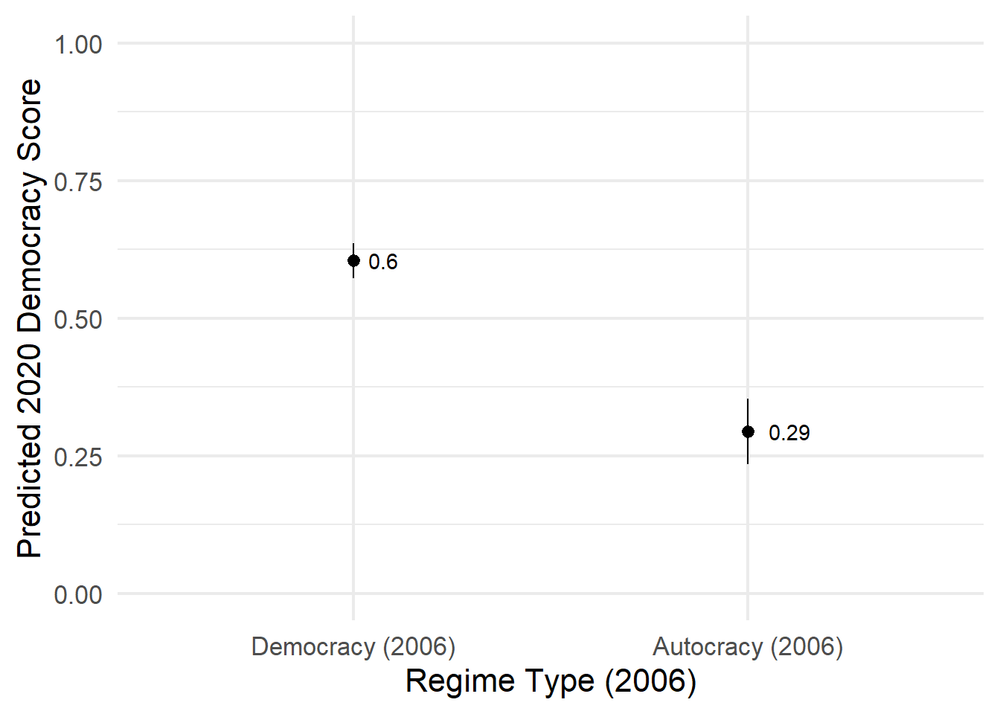
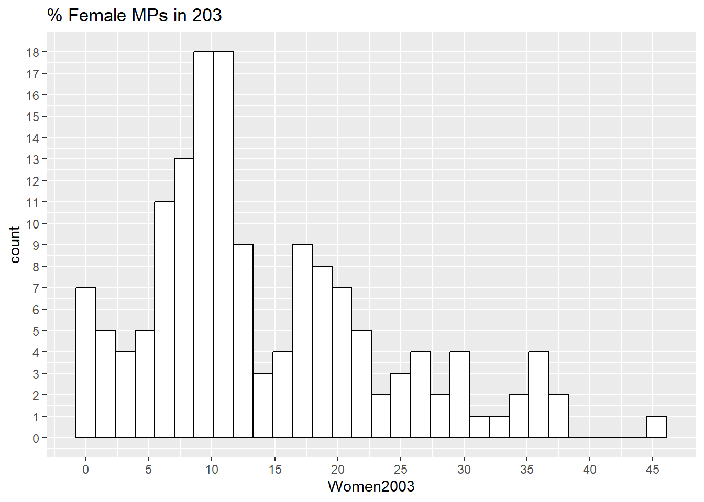
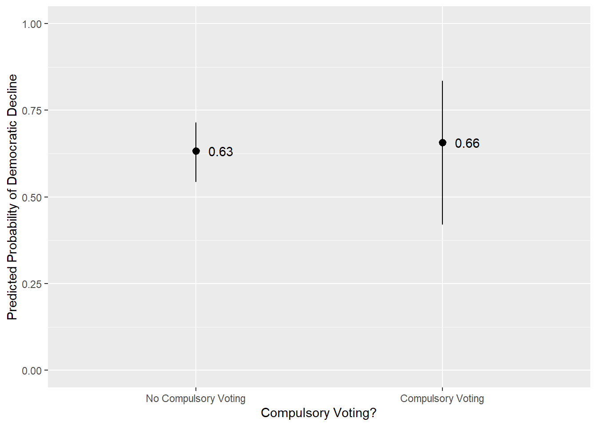
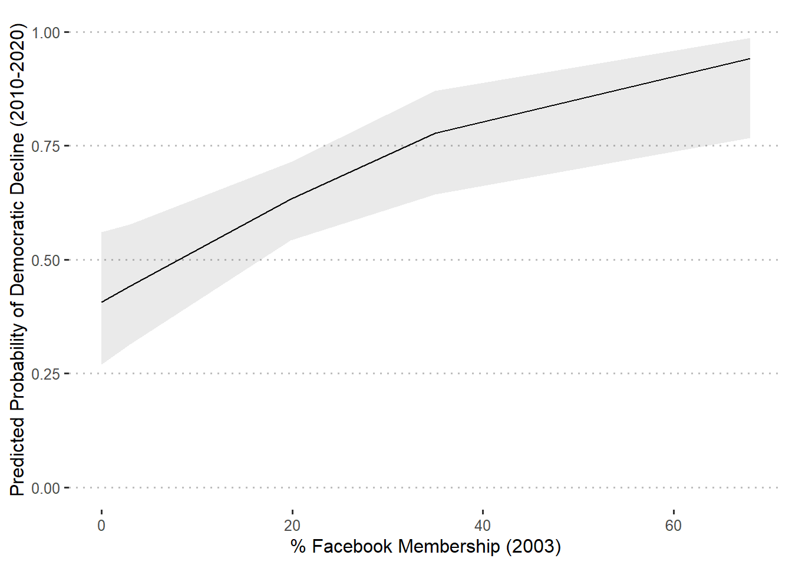
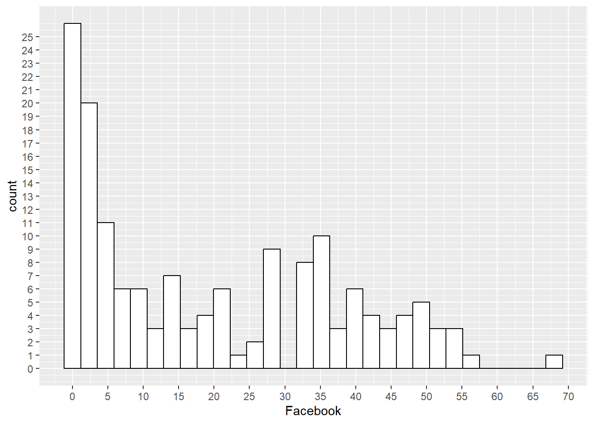

Creates a binary variable comparing countries deemed some type of democracy (liberal dem [1] or electoral dem [2]) vs. countries deemed an autocracy (3).
10
Converts that binary variable into a factor. Democracies are treated as the ‘baseline’ or ‘reference’ group (as if = 0) against which autocracies (=1) will be compared).
A thesis in my BAP will almost certainly use some type of regression model (OLS, logit, etc.) to summarize the relationship between multiple predictor variables and a dependent variable. The likely goal of this model is to examine some hypothesis, e.g., Y is expected to increase when X increases holding other predictors “constant”. You naturally need some tools for communicating the results of that model, and particularly the results relevant to your hypothesis, to your readers. On the one hand, you should include a regression table and/or a coefficient plot (with a regression table in an appendix) in the main body of the thesis. On the other hand, you need to include some written explanation of what the results show in relation to your hypothesis/es.
A natural place to focus your written explanation of the model is on the coefficient for the independent variable(s) central to your hypothesis/es. And, indeed, that was the focus of the instructions you were given in Statistics II about how to talk about regression results. However, you should go beyond talking about the direction (i.e., positive or negative) and statistical significance of this coefficient in your thesis to better flesh out what the model is telling us. In particular, you want to leave your reader with some sense of the substantive relationship between the two variables. Is this a “meaningful” association or not?
This chapter provides some thoughts on how you can can use your model to better flesh out discussions regarding this important, but difficult, question.
13.1 Example Model and Some Initial Thoughts
Let’s consider an initial model:
Show the code
# OLS Model m1 <-lm(v2x_polyarchy ~ Women2003 + GDP2006 + regime_type_2006, data = demdata)## Table (See Chapter 'Regression Table Formatting Suggestion' ## for reasoning behing this syntax)## I do not specify a Title here because I am doing that behind ## the scenes in creating this html documentdem_models <-modelsummary(m1, estimate ="{estimate}{stars}\n({std.error})", statistic =NULL, gof_map =c("nobs", "r.squared", "adj.r.squared"), coef_rename =c('(Intercept)'='Intercept', 'Women2003'='% Women MPs (2003)', 'GDP2006'='GDP Per Capita (2006)', 'regime_type_2006Autocracy (2006)'='Autocracy in 2006? (1 = Yes, 0 = Democracy)'), notes =list("Notes: OLS or Logit Coefficients with standard errors in parentheses", "* p < 0.05, ** p < 0.01, *** p < 0.001"), fmt =fmt_term(GDP2006 ="%.3e"),output ='flextable' )dem_models <- dem_models |>hline(i =nrow_part(dem_models) -3) |>align(i =1:nrow_part(dem_models), j =2:ncol_keys(dem_models), align ='center') |>align(align ='center', part ='header') |>autofit()dem_models
1
The coefficient for GDP will be very small given its coding. This bit of syntax handles the rounding of values for this specific coefficient value. The coefficient is small enough that the default would be to simply print “0.000***” absent this line. See here for more.
2
This makes the table fit the columns of the page. It works well with html output and okay when exporting to Word.
Table 13.1: Predicting Democracy Levels
(1)
Intercept
0.475*** (0.027)
% Women MPs (2003)
0.005** (0.002)
GDP Per Capita (2006)
7.736e-06*** (1.466e-06)
Autocracy in 2006? (1 = Yes, 0 = Democracy)
-0.310*** (0.035)
Num.Obs.
152
R2
0.550
R2 Adj.
0.541
Notes: OLS or Logit Coefficients with standard errors in parentheses
* p < 0.05, ** p < 0.01, *** p < 0.001
The DV in the model is a country’s score on the v2x_polyarchy measure of electoral democracy in the year 2020 provided by the Varieties of Democracy (V-Dem) project. The IVs include the following predictor variables: (1) the % of female members of parliament in the country in the year 2003; (2) the country’s gross domestic product per capita in the year 2006; and (3) a binary measure concerning whether the country was considered a democracy (=1) or an autocracy (=0) in the year 2006.
What do the coefficients tell us about the relationship between the predictor variables and the DV?
% Women MPs
Countries with more female MPs in the year 2003 are, on average, more democratic in the year 2020 than countries with fewer female MPs in 2003.
We expect democracy scores to increase by 0.005 scale points with each one unit (here, 1 %) increase in female MPs after adjusting for differences in country wealth and regime status.1 This relationship is statistically significant (p < 0.01).
GDP Per Capita (2006)
Richer countries are, on average, more democratic in the year 2020 than poorer countries. We expect democracy scores to increase by approximately 7.7359493^{-6} scale points, on average, when a country’s GDP per capita increases by 1 USD after adjusting for differences in female representation and 2006 regime status. This relationship is statistically significant (p < 0.001).
Autocracy in 2006?
Countries that were autocratic in 2006 remain less democratic in 2020 than countries that were democracies in 2006 after adjusting for differences in female representation and country wealth. If we compared countries with the same wealth in 2006 and same female representation in 2003, we’d expect the average democracy score in 2020 to be around -0.31 scale points lower in 2006 autocracies than 2006 democracies.
1 If the goal of the model were to examine this variable in particular, then the two “control” variables here might be problematic given that they are based on measurements taken three years after the Women MPs measure. The main question we’d have to consider is whether it is plausible that having more/less female MPs causes a country to have a higher GDP and/or to influence its subsequent regime status (and particularly so on such a small time scale). The latter possibility may be particularly problematic given that our DV is…regime status (e.g., level of democracy)! If the % of female MPs in 2003 does in fact cause variation in 2020 democracy scores and does so in part because of its influence on wealth and/or 2006 regime status, then our estimate for % of female MPs in 2003 will be “biased” - it will almost certainly be smaller than it should be. See the discussion in Chapter 11. I am just using these variables because I have them laying around, but if I were actually writing this as a paper then I’d be worried.
Okay…but are these differences actually meaningful? The numbers look small in some cases…but we’re dealing with continuous variables that may vary quite greatly, so it’s not clear whether the overall impact is meaningless or not. Consider the following descriptive data and histograms of the two continuous predictors:
vars n mean sd median trimmed mad min max range
GDP2006 1 165 7148.13 10635.06 2172.0 4847.22 2765.05 93 54779.0 54686.0
Women2003 2 152 14.13 9.60 11.3 13.22 8.38 0 45.3 45.3
skew kurtosis se
GDP2006 1.92 3.15 827.94
Women2003 0.85 0.20 0.78
Show the code
# Plotsp1 <-ggplot(demdata, aes(x = GDP2006)) +geom_histogram(fill ='white', color ='black') +labs(title ="GDP Per Capita (2006)")p2 <-ggplot(demdata, aes(x = Women2003)) +geom_histogram(fill ='white', color ='black') +labs(title ="% Female MPs in 203")p1 + p2

Figure 13.1: Continuous Predictor Variables - Distribution
Okay, so a 1 dollar increase in GDP yields a very small increase in the democracy score. But…is a change of 1 dollar a meaningful comparison to make or care about? The GDP variable ranges from 93 to around 54,779 with a standard deviation of 10,635 after all. A dollar increase in GDP may be meaningful in some instances, but is it what best communicates the influence of country wealth in this one? Meanwhile, the % Female MPs measure also varies quite a bit more than by 1% albeit not as greatly as GDP (e.g,. SD = 9.6 vs. 10,635!). The point here is that our unstandardized coefficient tells us something relevant (e.g., the slope of a regression line when the predictor variable is continuous), but we may not want to rely solely on it to convey the importance of the changes on offer.2
2 As I’ll discuss below, the coeficient for a binary/categorical variable is perhaps more directly relevant here since these types of variables involve comparisons between two (and only two) groups in the first place.
Maybe we can turn to standardized coefficients then?
# DV and IV are standardized by 1 SDstandardize_parameters(m1)
The standardized coefficients fro Women2003 and GDP2006 tell us how many standard deviations we expect the DV to change when the IV in question changes by 1 standard deviation. The standardized coefficient for the regime type factor variable, meanwhile, indicate the difference between the two categories of the factor variable (Autocracy in 2006 vs. Democracy in 2006) in standard deviations. We could perhaps now turn to some ‘rules of thumb’ about effect sizes (such as those reported in the Statistics I materials for interpreting Cohen’s d) to make claims about the size of these relationships. The two continuous variables might thus be described as having a somewhat small effect, while the regime comparison yields a large one. However…have we really clarified things for ourselves or for those to whom we are communicated our results? What does a 0.2 or 0.32 or 1.22 SD change really mean in our given context? It seems like a lot…but are we talking about a change from a complete autocracy to a complete democracy? From an autocracy to a slightly less autocratic (but still not democratic) country? Something else?3 Moreover, what if our results were from a logistic model? Technically we can use an odds ratio there, but those aren’t particularly intuitive in their own right either.
3 The DV is also being standardized here (e.g., 1 SD change in X yields some amount of change in SDs of Y). We could omit that by including include_response = F in our syntax. That might make our discussions easier to follow in situations where the scale of the DV is easier or more intuitive to understand.

Saying something about the substantive effect of a variable can be difficult as discussed in Chapter 5. My recommendation here is to use your model. In particular, use the model to estimate predicted values, i.e., what value we would expect the DV to be, on average, given this model for some important values of your main IV(s). You can then integrate that information into your written reports directly and/or in relation to figures. Doing so will help flesh out what your coefficient is really implying about the relationship and, hence, give greater substance to your discussion.
13.2 Two Questions to Think About for Substantive Significance
The foregoing is a recommendation about the form of how you discuss your results: remind the reader about what your hypothesis, indicate what evidence would be consistent with it in your model, tell us whether that evidence shows up (e.g., is the coefficient in the right direction and statistically significant, and then use predicted values to flesh out the meaning of that coefficient and particularly so in contexts where the coefficient is statistically significant). However, this still elides the question about whether the patterns you see are meaningfully or substantively significant or not. This is a difficult to answer question because the answer may be research question and contingent (e.g., a “small” effect could be meaningful in some contexts but not others). However, I think you should consider two questions on this front to try and structure your discussion and interpretations.
First, what comparison in terms of X values do you want to call our attention to? In other words, if you’re calculating predicted values or creating a predicted values plot, then what would a meaningful difference in X even be in your context?
This question is pretty straight forward to answer if your main IV is a factor variable: the comparison of interest is between the two categories of your binary variable or the reference group and the other categories (or, potentially one or two particular categories) of your categorical variable.
The answer to this question is perhaps less clear cut with a continuous IV. Per above, the coefficient for a continuous variable tells us about change in Y given a one unit change in X, but one unit may or may not be meaningful or important on its own right in particular examples. A 1 dollar difference in GDP seems somewhat trivial…but should we instead be comparing countries that differ by 100 USD, 1000 USD, 50,000 USD? You can (maybe should) provide a plot showing predicted values across the full range of GDP. That may nicely demonstrate the extent of change when moving from the minimum of X to its maximum…but maybe those values are outliers…so, is that the most important comparison to make? This is a question that you’ll need to give consideration in the context of your particular project and data. I’ll discuss some options below.
Second, once you have thought through what a meaningful comparison would be and provided some evidence about the difference in Y in that comparison, you then have to answer the question: “okay, but is the amount of difference important?”. Is it a “big” difference or not? This is a difficult question to answer since the answer can be question and data contingent. Some differences may be prima facie large: for instance, if the difference between “low” and “high” values of X is 8 scale ponits on a variable that ranges from 0 to 10 then, yeah, that’s probably a really large effect. Most of the time, however, you’ll probably not be finding differences of this magnitude. Here are three other ways of considering this question:
Percent change and intuition
One could use a calculator (or R as a calculator) to calculate the percentage change represented by a given comparison.
The predicted democracy score for a country with 0 female legislators is 0.53 while it is 0.77 for a country with the maximum observed value on this variable. That yields a percentage change of: \(\frac{0.77 - 0.53)}{0.77} * 100 = 31.2\%\)
It’s up to intuition, perhaps, from there: does a 31.2% change seem large? It does to me actually…although it’s possible that the difference I’ve brought attention to here (maximum IV - minimum IV) might be unrepresentative. The third quartile for the Women MP variable is 19.5, for instance, so the maximum value seems like an outlier.
Variation in the DV
One could alternatively look at the difference in comparison to the variation in the DV.
One way to do this is to compare the change to the length or range of the DV. For instance, Malhotra, Margalit, and Mo consider whether experiencing an economic threat from immigration is associated with greater opposition to immigration. They note on p. 401 of their manuscript that the difference in means on their DV between those not threatened and those threatened ranges from 0.06 to 0.12. Their DV is scaled from 0-1. They thus write: “These differences are also substantially meaningful, representing about 6 to 12% of the length of the scale.”
This type of discussion can be aided by first converting all non-factor variables used in an OLS model to a 0-1 scale as these authors do. This can be most easily done using the rescale() function in the scales package. For instance: mutate(newvar = scales::rescale(oldvar, to = c(0,1))). If that is done, then the resulting coefficients automatically compare the difference in the expected mean of Y between those at the maximum of the IV (=1) and those at the minimum (=0). One could then multiply by 100% to get to a similar discussion as the authors above.
Alternatively, one could use the standard deviation of the DV to give some context here. Suppose that our DV ranges from 0-100 and that we compare observations at the maximum and minimum of an IV where we find an expected difference of 45.8 scale points. Suppose that the standard deviation of the DV is 30.24. The difference between predicted values at the maximum and minimum values of the IV is thus something like 1.5 standard deviations ( \(\frac{45.8}{30.24}=1.51\)). That seems like a pretty sizable difference to me!
This is similar to the standardized coefficients above, but we are choosing what values of the IV to compare.
Of course, one must also try and interpret such results as best one can as to whether it is ‘large’ or ‘meaningful’ in the context of the study.
Change in Status
A more qualitative approach. Does the difference in predictions show a change in status of some type? For instance, does moving across the range of the IV lead to a change in the nature of attitudes (e.g., from support to oppose?; from satisfaction to dissatisfaction?; from being unlikely to vote for Candidate A to being more likely than not to vote for Candidate A?).
The remaining sections walk through a few examples and discuss these issues further. They also introduce a command from the marginaleffects package that may help you on the way: the comparisons() function.
13.3 OLS Model, Factor Predictor
Let’s begin with perhaps the simplest example: your main IV is a factor variable (i.e., a binary variable or a categorical variable converted into a factor in R).4 We’ll use the example from above that features a binary indicator for whether a country was considered an autocracy in the year 1984 or a democracy in that year.
4 If you’re using SPSS, then you need to manually create the separate dummy variables and include the appropriate number of them in the model. You need to include k-1 dummies where k = the number of categories on the original variable. A variable with four categories (e.g., North, West, South, and East) would necessitate the inclusion of three dummy variables (e.g., north (0 = not North, 1 = North), west (0 = not West, 1 = West), and south (0 = not South, 1 = South).
(1)
Intercept
0.475*** (0.027)
% Women MPs (2003)
0.005** (0.002)
GDP Per Capita (2006)
7.736e-06*** (1.466e-06)
Autocracy in 2006? (1 = Yes, 0 = Democracy)
-0.310*** (0.035)
Num.Obs.
152
R2
0.550
R2 Adj.
0.541
Notes: OLS or Logit Coefficients with standard errors in parentheses
* p < 0.05, ** p < 0.01, *** p < 0.001
Let’s say that we have the following hypothesis: “Hypothesis 1: Countries considered autocratic in 2006 remain less democratic in 2020 than countries considered democratic in 2006, all else equal”. We might begin our discussion as so:5
5 References to table/figure numbers is, of course, a bit arbitrary here.
I argued in Hypothesis 1 that countries considered autocratic in 2006 would remain less democratic in 2020 than countries considered democratic in 2006. Table 2 shows the results of my regression model where a negative coefficient for 2006 regime type would represent evidence consistent with H1. And, indeed, we see a negative and statistically significant (p < 0.001) coefficient emerge for regime type. Autocratic countries in 2006 are expected to score 0.31 scale points lower on V-Dem’s polyarchy measure than 2006 democratic countries with equivalent levels of female representation and GDP per capita. The evidence in Table 2 is thus consistent with my expectations.6
6 A note here: don’t say that you have “proven” your hypothesis. We don’t really do that. We may falsify them, but evidence consistent with our expectations do not mean that we have definitely proven our claims. Maybe our model is garbage, for instance. Maybe it only applies to our given context.
The foregoing is a very nice discussion: it clearly delineates what the expectations are, what evidence would be consistent with them, and whether that is the case. However, I think we can go a bit further to flesh this out per earlier discussions. In particular, we might use the predictions() command to calculated average predicted values of the DV and then integrate them into our written discussion either directly or by a reference to an additional figure we create.
Here are the predicted values for the two categories of this variable:
predvals <-predictions(m1, by ="regime_type_2006", newdata ="mean") predvals
ggplot(predvals, aes(x = regime_type_2006, y = estimate)) +geom_pointrange(aes(ymin = conf.low, ymax = conf.high)) +geom_text(aes(label =round(estimate, 2)), hjust =-0.5) +scale_y_continuous(limits =c(0,1)) +labs(x ="Regime Type (2006)", y ="Predicted 2020 Democracy Score") +theme_minimal(16)

These values may help us further communicate the substantive importance of this difference. On the one hand, the difference seems quite large when we consider it in relation to the theoretical range of the DV: 0-1. The difference between the two categories is thus around \(\frac{1}{3}\) of the DV’s scale.7 Or, we could compare this difference to the standard deviation of the DV (0.25): \(\frac{0.31}{0.25} = 1.2\). What about qualitatively? The V-Dem scale ranges from 0-1 with higher values = more democratic regime, but the specific values (0.3, 0.7, etc.) are a bit abstract as to what they actually represent.8 Democracy score data from Freedom House and elsewhere is often measured on an interval scale and then categorized. Lührmann, Tannenberg, and Lindberg discuss doing so for the V-Dem measure used here and suggest the regimes must have at least a 0.5 on this v2x_polyarchy variable to be considered democratic. Based on this, we might say that 2006 classifications remain pretty stable or consistent: countries considered autocratic in 2006 remain autocratic (on average) while countries considered democratic in 2006 remain democratic (on average).
7 In practice, this variable ranges from 0.015 to 0.908 since there are no perfect (non)democracies.
8 You can read more about V-Dem’s methodology here.
We might thus update our discussion to make some of these points salient. (Note: it might make sense to divide this into two paragraphs.)
I argued in Hypothesis 1 that countries considered autocratic in 2006 would remain less democratic in 2020 than countries considered democratic in 2006. Table 2 shows the results of my regression model where a negative coefficient for 2006 regime type would represent evidence consistent with H1. And, indeed, we see a negative and statistically significant (p < 0.001) coefficient emerge for regime type. The difference between these countries is not just statistically significant, but also substantively meaningful. A difference of 0.31 scale points is around 1/3rd of the scale of the dependent variable. Figure 1, meanwhile, shows the predicted democracy score for each set of countries: 0.29 [95% CI; 0.24, 0.34] in 2006 autocracies and 0.60 [0.57, 0.64] in 2006 democracies. Lührmann, Tannenberg, and Lindberg recommend a score of 0.5 as a cut off point separating democracies from non-democracies on this measure. The results in Table 2 and Figure 1 thus indicate not just a different in degree, but also a difference in kind with previously autocratic countries remaining autocratic, on average, and previously democratic countries doing the same. Ultimately, the evidence in Table 2 is thus consistent with my expectations.
13.4 OLS Model, Continuous Predictor
Okay, let’s consider a situation where our IV is continuous in nature such as the % Women MPs measure in this example:
(1)
Intercept
0.475*** (0.027)
% Women MPs (2003)
0.005** (0.002)
GDP Per Capita (2006)
7.736e-06*** (1.466e-06)
Autocracy in 2006? (1 = Yes, 0 = Democracy)
-0.310*** (0.035)
Num.Obs.
152
R2
0.550
R2 Adj.
0.541
Notes: OLS or Logit Coefficients with standard errors in parentheses
* p < 0.05, ** p < 0.01, *** p < 0.001
Let’s say that we have the following hypothesis: “Hypothesis 1: Countries with greater female representation are more democratic than countries with less female representation, all else equal”. We might begin our discussion as so:
I argued in Hypothesis 1 that countries female representation would be positively associated with democracy levels. Table 2 shows the results of my regression model where a positive coefficient for female representation would represent evidence consistent with H1. And, indeed, there is a positive and statistically significant (p < 0.01) coefficient emerge for this variable. Each one percentage increase in female representation is associated with an increase of 0.005 scale points, on average, after adjusting for differences in country wealth and prior regime status. The evidence in Table 2 is thus consistent with my expectations.
Again, not bad. But, 0.005 seems awfully small. Is this actually a meaningful comparison?
One place we could begin is by plotting expected democracy scores across the range of our continuous predictor variable. We could then produce a plot showing these results in our paper to anchor our discussions. We’ll first use the predictions() command to obtain sensible values of the IV to obtain predictions for and then return to the command to get the average predictions for each level:9
9 We could just do summary(demdata$Women2003) to get these values. The risk here concerns missing data - if our model is only done on a subset of observations in our full dataset due to missing data on either the DV or one of the other IVs, then the minimum and maximum values might not match those used in fitting the model.
# Range of IV via predictions() among observations in modelpredictions(m1) |>as_tibble() |>select(Women2003) |>summary()
Women2003
Min. : 0.000
1st Qu.: 7.675
Median :11.300
Mean :14.130
3rd Qu.:19.550
Max. :45.300
The figure suggests a pretty sizable change in the DV moving across the full range of the IV. Our expectation among countries with 0% female legislators and mean/modal values on the control variables is 0.53 [0.48, 0.58], right around the 0.5 cut off discussed above. The expected values at the observed maximum of the IV is 0.77 [0.67, 0.87], more clearly democratic in nature. The difference between those values represents a 31% change, or a difference equivalent to around 1/3rd of the range of the DV, or a difference of around 0.96 standard deviations or so on the DV. This would indicate a pretty sizable difference.
Including a plot like the one above into our paper would be a great way of fleshing out the meaning of our IV. However, is drawing attention to the difference between minimum and maximum values of this IV really the best comparison in this example? Consider again the distribution of the variable:

The maximum value here seems like a clear outlier. There is only one country at the maximum and the next closest values are at around 37 or so on the scale. The focus on the maximum - minimum might thus overstate the importance of this variable a bit.
Comparing values at the minimum and maximum of a continuous IV may be an intuitive way of conveying the cumulative or total effect of the variable. But, per above, it might not always be appropriate if this change is uncommon or represents differences between outliers. An alternative tactic that you may observe in researcher is to focus on other indicators for “low” and “high” values on a scale that stop short at the very extremes. Common examples include:
The 10th and 90th percentiles of the variable’s distribution
The 25th and 75th percentiles of the variable’s distribution
1 standard deviation below and 1 standard deviation above the mean
There isn’t really a “right” answer as to which to use. Alternative numbers could be useful as well. Could we imagine a policy intervention, for instance, that leads to a change from 4% (10th percentile) female MPs to 28% female MPs? If not, then maybe a narrower interval would be more useful. Then again, perhaps gender quotas might have such an effect! Or, maybe the comparison of moving from 0% female MPs to average levels might be even more useful. There are no easy answers here but to think about your RQ, the data before you, and what might be particularly useful to draw attention to.
Let’s return to our data. We can find the 25th and 75th quartiles via the summary() command. We can use the quantile() command, meanwhile to obtain percentiles at any other value we might care about.
Put the percentiles here, but as decimals (e.g., 10th percentile \(\rightarrow\) 0.1, etc.).
Min. 1st Qu. Median Mean 3rd Qu. Max. NA's
0.000 7.675 11.300 14.130 19.550 45.300 27
10% 20% 25% 75% 80% 90%
3.830 6.040 7.675 19.550 21.480 28.300
Let’s say we think drawing attention to a “low” value of the 10th percentile (3.8% female MPs) and the 90th percentile (28.3%) would best convey the importance of our variable. I would still provide the corresponding full figure of predicted values from above, but I would supplement the text discussion with predicted values at these levels.
I argued in Hypothesis 1 that countries female representation would be positively associated with democracy levels. Table 2 shows the results of my regression model where a positive coefficient for female representation would represent evidence consistent with H1. And, indeed, there is a positive and statistically significant (p < 0.01) coefficient emerges for this variable such that each one percentage increase in female representation is associated with an increase of 0.005 scale points, on average, after adjusting for differences in country wealth and prior regime status. The evidence in Table 2 is thus consistent with my expectations.
How important is the relationship between female representation and subsequent democracy scores? Figure 1 plots the democracy score we expect to observe across the range of female representation. The difference between predicted democracy scores at the maximum observed value for female representation (45.3%) and the observed minimum (0%) is quite substantial in nature (0.24 scale points or approximately one quarter of the range of the DV). However, the the maximum here is bit unrepresentative as only one country in the model has a female representation value above 40%. If we instead compare countries at the 90th (28.3% female representation) and 10th (3.83%) percentiles, then we’d expect to see a difference in democracy scores of 0.13 scale point on average (10th percentile: 0.55 [95% CI: 0.51, 0.60], 90th percentile: 0.68 [0.63, 0.73]). This still represents a fairly important difference. Lührmann, Tannenberg, and Lindberg, for instance, recommend using 0.5 as the cut off between democratic and non-democratic countries. Moving from a country with very little female representation to one with a comparatively high level (but equivalent values on the other predictor variables) thus represents a change from countries straddling the democracy/non-democracy line to ones that are more consistently democratic in nature.
There is one final tool that may be relevant here. The discussion above notes the predicted value and its corresponding uncertainty. It also mentions the difference between predicted values. However, this discussion lacks any mention of uncertainty. We can use the comparisons() command in the marginaleffects package to accomplish this end (see here for a longer discussion).
The name of the command is comparisons(). We then provide the name of the saved model object (m1 in this example.
variable = list(Women2003 = c(3.83, 28.3)),
We can then specify which variable the comparison should be done for and the values on that variable we want to compare. In essence, the command will use this information to calculated predicted values at these two levels of the IV and then calculate the difference between them.
newdata = 'mean')
This tells the command to hold the other predictor variables constant at their mean (continuous variable) or mode (categorical). Omitting this portion of the syntax would not really change things if the model is a linear regression like here - the slope of a linear regression line for a given IV in the model is the same regardless of the specific values of the other predictors. However, this is not the case with a logistic model.
Term: This indicates the variable in the comparison.
Contrast: This indicates the type of comparison being offered. Here, we specified that we wanted to look at the difference in predicted value between cases with a value of 28.3 on the Women2003 IV and those with a value of 3.83, hence “28.3 - 3.83”.
Estimate: The difference between the predicted values. 0.13 much as above.
Std. Error, z, Pr(>|Z|), 2.5%, and 97.%: The standard error, test-statistic, p-value for the comparison, and confidence intervals. You can ignore the “s” column.
The difference in predicted values here is 0.13 [95% CI: 0.05, 0.21] and statistically significant (p < 0.001). This might be helpful information to convey in the written report:
I argued in Hypothesis 1 that countries female representation would be positively associated with democracy levels. Table 2 shows the results of my regression model where a positive coefficient for female representation would represent evidence consistent with H1. And, indeed, there is a positive and statistically significant (p < 0.01) coefficient emerges for this variable such that each one percentage increase in female representation is associated with an increase of 0.005 scale points, on average, after adjusting for differences in country wealth and prior regime status. The evidence in Table 2 is thus consistent with my expectations.
How important is the relationship between female representation and subsequent democracy scores? Figure 1 plots the democracy score we expect to observe across the range of female representation. The difference between predicted democracy scores at the maximum observed value for female representation (45.3%) and the observed minimum (0%) is quite substantial in nature (0.24 scale points or approximately one quarter of the range of the DV). However, the the maximum here is bit unrepresentative as only one country in the model has a female representation value above 40%. If we instead compare countries at the 90th (28.3% female representation) and 10th (3.83%) percentiles, then we’d expect to see a difference in democracy scores of 0.13 [95% CI: 0.05, 0.21] scale points on average (10th percentile: 0.55 [95% CI: 0.51, 0.60], 90th percentile: 0.68 [0.63, 0.73]). This still represents a fairly important difference. Lührmann, Tannenberg, and Lindberg, for instance, recommend using 0.5 as the cut off between democratic and non-democratic countries. Moving from a country with very little female representation to one with a comparatively high level (but equivalent values on the other predictor variables) thus represents a change from countries straddling the democracy/non-democracy line to ones that are more consistently democratic in nature.
13.5 Logistic Model
The foregoing all goes for logistic regression but perhaps double so since logistic coefficients are basically uninterpretable on their own. We thus should be especially keen to use our model by calculated predicted probabilities and average marginal effects (i.e., the average change in the probability that Y = 1 given a one unit change in X). At the same time, a discussion of predicted probabilities might be helped here by the fact that 0.5 is a clear change in status: from less likely than not that Y= 1 to more likely than not.
Show the code
# Data managementdemdata <- demdata |>mutate(dem_decrease =factor(dem_decrease, levels =c(0, 1), labels =c("Stable/Increased Democracy", "Decreased Democracy")), cvoting =factor(compulsory_voting, levels =c(0,1), labels =c("No Compulsory Voting", "Compulsory Voting")))# Modelm2 <-glm(dem_decrease ~ Facebook + cpi + cvoting, data = demdata, family ="binomial")# Table (including Nagelkerke R2)# adding Nagelkerke R2dem_model_2 <-modelsummary(m2, output ='modelsummary_list')dem_model_2$glance$r2.nagelkerke <- performance::r2_nagelkerke(m2)# Creating the tabledem_tab_2 <-modelsummary(dem_model_2,estimate ="{estimate}{stars}\n({std.error})", statistic =NULL, gof_map =c("nobs", "r2.nagelkerke"),coef_rename =c('(Intercept)'='Intercept', "Facebook"="Facebook Members (%) in 2013", "cpi"="Corruption Perception Index", "cvotingCompulsory Voting"="Compulsory Voting System"),notes =list("Notes: Logit Coefficients with standard errors in parentheses", "* p < 0.05, ** p < 0.01, *** p < 0.001"), output ='flextable' )dem_tab_2 <- dem_tab_2 |>hline(i =nrow_part(dem_tab_2) -2) |>align(i =1:nrow_part(dem_tab_2), j =2:ncol_keys(dem_tab_2), align ='center') |>align(align ='center', part ='header') |>autofit() dem_tab_2
1
The Nagelkerke R2 is not added by default. The first step in getting around this is this line. output = modelsummary_list tells the command to simply export the underlying data that will be used in creating the table. We can then add new data before creating the table. No other formatting options should be used yet.
2
output = modelsummary_list creates a list with two tables: (1) $tidy which contains information about the coefficients, standard errors, etc. and (2) $glance which contains information about model fit. This line adds a new column to that table called “r2.nagelkerke” that will contain the output of the r2_nagelkerke command from the performance package. The naming here is important: it needs to be “rs.nagelkerke” for the table to use the correct output.
3
We then create the table but here we use the name of the object we created using modelsummary_list and which has the extra column from step 2.
Notes: Logit Coefficients with standard errors in parentheses
* p < 0.05, ** p < 0.01, *** p < 0.001
Table 13.2 is our example model here. The DV again focuses on democracy score data, but here dichotomized such that countries with a score of 1 saw a decrease in their democracy score between 2010 and 2020 and those with a score of 0 saw either an increase or no change at all. Three IVs are included: (1) the % of people using Facebook in the country as of 2013, (2) the corruption perception index for the country (higher = less perceived corruption, and (3) a binary indicator for whether the country has a compulsory voting system (=1) or not (=0).
The coefficients here are on the log of the odds scale. We can use them to discuss the direction of the relationship but not the substance.
Let’s start with the compulsory voting measure. It has a positive coefficient, which indicates that countries with a compulsory voting system were more likely to see a decrease in democracy from 2010 to 2020, but this difference is not statistically significant so we cannot rule out the possibility of no difference on the DV between these categories. We could perhaps stop there as it were, i.e., simply note that we do not find a significant difference. Sometimes that is just fine in the paper. However, I think we should still calculate the predicted probability that DV = 1 (democratic decline) for both categories and their associated uncertainty in this instance. We only have 155 observations in the data. Meanwhile, very few countries are recorded as having a compulsory voting system of some type.10 Perhaps there is a meaningless expected difference between countries…or perhaps there is a large difference with lots of uncertainty.
10 This is a slight understatement. The data here comes from the v2elcomvot in the V-Dem data. This variable divided countries into four categories: No CV (n = 156), CV but without sanctions or sanctions are not enforced (n = 12), CV with enforced but minimal sanctions (n = 10), and Sanctions with considerable enforced sanctions (n = 1). Really, there are perhaps 11 countries, or perhaps even 1, with a true compulsory voting system.
table(demdata$compulsory_voting)
0 1
156 23
Let’s take a look at the predicted probabilities and the average marginal effect:
# Predicted Probabilitypredictions(m2, by ="cvoting", newdata ="mean")
Term Contrast Estimate Std. Error z
cvoting Compulsory Voting - No Compulsory Voting 0.0223 0.116 0.192
Pr(>|z|) S 2.5 % 97.5 %
0.848 0.2 -0.205 0.249
Columns: term, contrast, estimate, std.error, statistic, p.value, s.value, conf.low, conf.high
Type: response
Yeah, it’s not an uncertainty issue. The AME is 0.02 or a .2 percentage point difference. The predicted probabilities bring this home: Pr(Decline given compulsory voting system) = 0.66 [0.42, 0.84], Pr(Decline given non-compulsory system) = 0.63 [0.54, 0.72]. There is a lot of uncertainty around those estimates, particularly for the compulsory voting prediction, but this seems like a case where statistical insignificance is likely associated with substantive insignificance (at least, based on this model).
Show the code
predictions(m2, by ="cvoting", newdata ="mean") |>ggplot(aes(x = cvoting, y = estimate)) +geom_pointrange(aes(ymin = conf.low, ymax = conf.high)) +geom_text(aes(label =round(estimate, 2)), hjust =-0.5) +scale_y_continuous(limits =c(0,1)) +labs(x ="Compulsory Voting?", y ="Predicted Probability of Democratic Decline")

How might we write this up?
I argued in Hypothesis 1 that countries with a compulsory voting system should be less likely to experience democratic erosion. Table 1 provides the results from my logistic model testing this proposition where a negative coefficient for the compulsory voting indicator would be consistent with Hypothesis 1. Ultimately, I do not find evidence in line with my expectations. The coefficient for compulsory voting is positive rather than negative. It is also statistically insignificant (p = 0.85). The predicted probability of democracy scores decreasing is nearly the same in both sets of countries when covariates are set at their mean or mode (Compulsory Voting: 0.63 [95% CI: 0.54, 0.72]; No Compulsory Voting: 0.66 [0.42, 0.84]). The resulting average marginal effect of the variable is rather trivial in nature (0.02 [-0.22, 0.26]). Compulsory voting thus appears unrelated to democratic declines, a point that I discuss in further in the Conclusion.
Let’s turn to a continuous measure: the % of people using Facebook in the country as of 2013. Its coefficient is positive and statistically significant indicating that countries with more Facebook users were more likely to see a decrease in their democracy scores than countries with fewer Facebook users. We should be highly careful about saying this is a causal relationship of course - there are likely omitted variables here and, meanwhile, the DV is a change score from 2010 to 2020 and the IV is measured in 2013, so we likely cannot rule out the possibility that decreases in the 2010-2012 region led to more Facebook use!
This is a continuous variable. Here, I’d recommend including a plot of the predicted probabilities and then supplementing with a discussion in text, perhaps calling attention to “low” vs “high” comparisons of relevance/interest.
# Range of variable among observations in model predictions(m2) |>as_tibble() |>select(Facebook) |>summary()# Predicted Valuespredvals_facebook <-predictions(m2, newdata =datagrid(Facebook =c(0, 3, 19.83, 35, 68)))predvals_facebook# AMEavg_slopes(m2, variables ="Facebook")#Plotggplot(predvals_facebook, aes(x = Facebook, y = estimate)) +geom_line() +geom_ribbon(aes(ymin = conf.low, ymax = conf.high), alpha =0.1) +scale_y_continuous(limits =c(0,1)) +labs(x ="% Facebook Membership (2003)", y ="Predicted Probability of Democratic Decline (2010-2020)") + ggpubr::theme_pubclean()
1
Uses a ggplot() theme contained in the ggpubr package. That package would need to be installed for the syntax to work. Just showing some different options here.

Facebook
Min. : 0.00
1st Qu.: 3.00
Median :15.00
Mean :19.83
3rd Qu.:35.00
Max. :68.00
Facebook Estimate Pr(>|z|) S 2.5 % 97.5 % cpi cvoting
0.0 0.407 0.23428 2.1 0.270 0.560 44.2 No Compulsory Voting
3.0 0.441 0.39851 1.3 0.314 0.577 44.2 No Compulsory Voting
19.8 0.633 0.00421 7.9 0.543 0.715 44.2 No Compulsory Voting
35.0 0.777 < 0.001 12.3 0.643 0.871 44.2 No Compulsory Voting
68.0 0.942 < 0.001 10.7 0.768 0.988 44.2 No Compulsory Voting
Columns: rowid, estimate, p.value, s.value, conf.low, conf.high, cpi, cvoting, Facebook, dem_decrease
Type: invlink(link)
Term Estimate Std. Error z Pr(>|z|) S 2.5 % 97.5 %
Facebook 0.0101 0.00297 3.4 <0.001 10.5 0.00427 0.0159
Columns: term, estimate, std.error, statistic, p.value, s.value, conf.low, conf.high
Type: response
The probability of a democratic decline given a one unit change in the Facebook measure is around 0.01 probability points, on average. The predicted values (plot) shows that the degree of change when moving a significant degree of the range of the IV is also pretty substantial. The probability when we’re at the minimum of the IV is around 0.41 [0.27, 0.56] but 0.94 [0.77, 0.99] at its maximum. Of course, that maximum value might not be the best one to focus on much like earlier.
#Uses predictions() to just get observations in the modelpredictions(m2) |>ggplot(aes(x = Facebook)) +geom_histogram(color ='black', fill ='white') +scale_y_continuous(breaks =seq(from =0, to =25, by =1)) +scale_x_continuous(breaks =seq(from =0, to =70, by =5))

predictions(m2) |>select(Facebook) |>summary()
Facebook
Min. : 0.00
1st Qu.: 3.00
Median :15.00
Mean :19.83
3rd Qu.:35.00
Max. :68.00
While there are lots of countries in the data that had no Facebook users in 2013, there is only one at the very maximum. This country is also a bit extreme when compared to the next closest ones which are at around 50-55 on the variable. Much as above, we can perhaps think about some other comparisons that might be more informative:
# SD < Mean vs. SD > Mean# Stores the values first so I don't have to look them up and manually add themmean_below <-mean(demdata$Facebook, na.rm = T) -sd(demdata$Facebook, na.rm = T)mean_above <-mean(demdata$Facebook, na.rm = T) +sd(demdata$Facebook, na.rm = T)predictions(m2, newdata =datagrid(Facebook =c(mean_below, mean_above)))
I argued in Hypothesis 1 that countries with greater Facebook usage would be more likely to see a decline in their democracy scores in the years between 2010 and 2020. Table 1 provides the results from my logistic model testing this proposition where a positive coefficient for the Facebook variable would be consistent with H1. And, indeed, a positive and statistically significant (p < 0.01) coefficient emerges. The corresponding average marginal effect for the Facebook variable is 0.01 [95% CI: 0.004, 0.02], which indicates that the probability of seeing a decrease in a country’s democracy score increases by 0.01 probability points with each 1% increase in Facebook membership. This expected change adds up as seen in Figure 1 which plots the predicted probability of a democratic decline (holding the other predictors at their mean or mode) across the range of the Facebook variable. The amount of change is quite substantial. For instance, the predicted probability of democratic erosion among countries one standard deviation above the mean on the Facebook variable (38.1%) is 0.372 probability points greater than among countries one standard deviation below the mean of this variable (1.94%; difference in probability: 0.37 [0.16, 0.59]). Table 1 and Figure 1 thus provide consistent evidence in favor of H1.